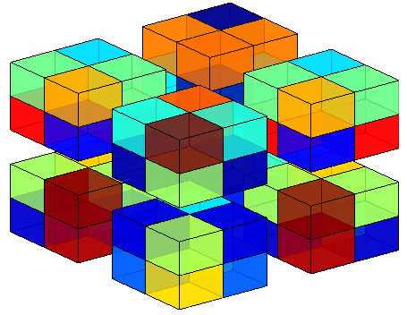
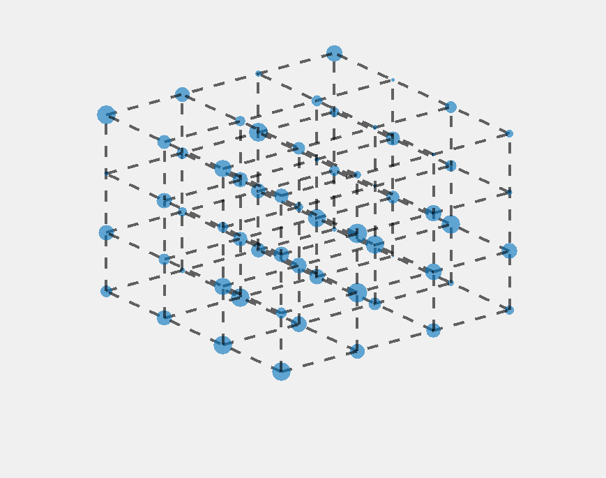

Software
Tools for tensor visualization and reproducible research.
Software accompanying methodological work, with an emphasis on making high-dimensional and tensor-structured data easier to inspect and understand.
tevis
Tensor visualization for MATLAB.
tevis — tensor visualization
A MATLAB package for visualization of tensors. It facilitates understanding of tensor-structured data and generates illustrative figures for tensor data methods.


